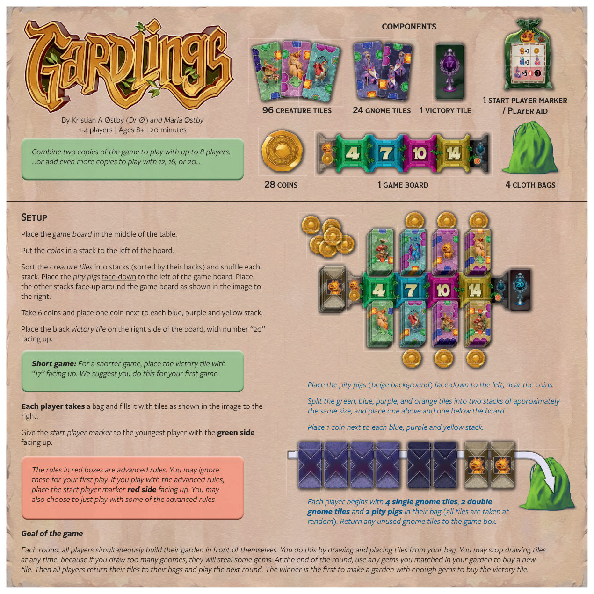
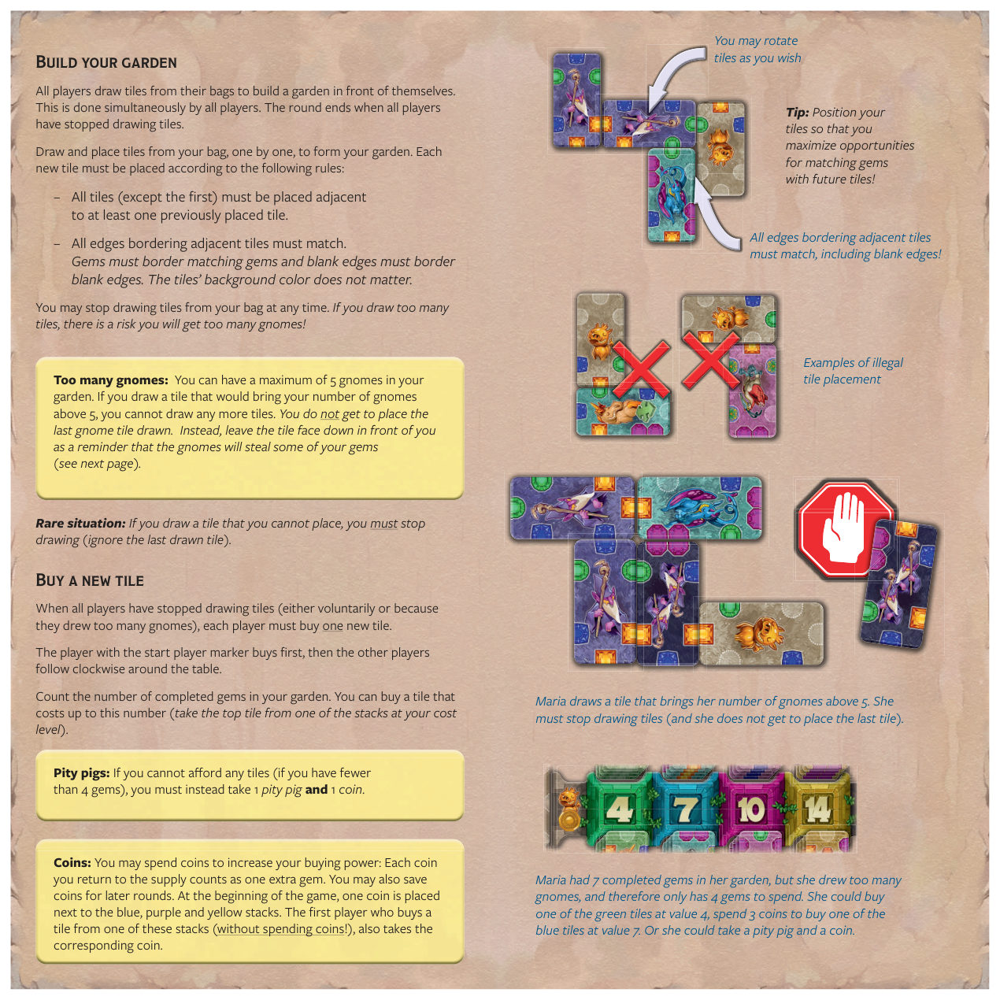
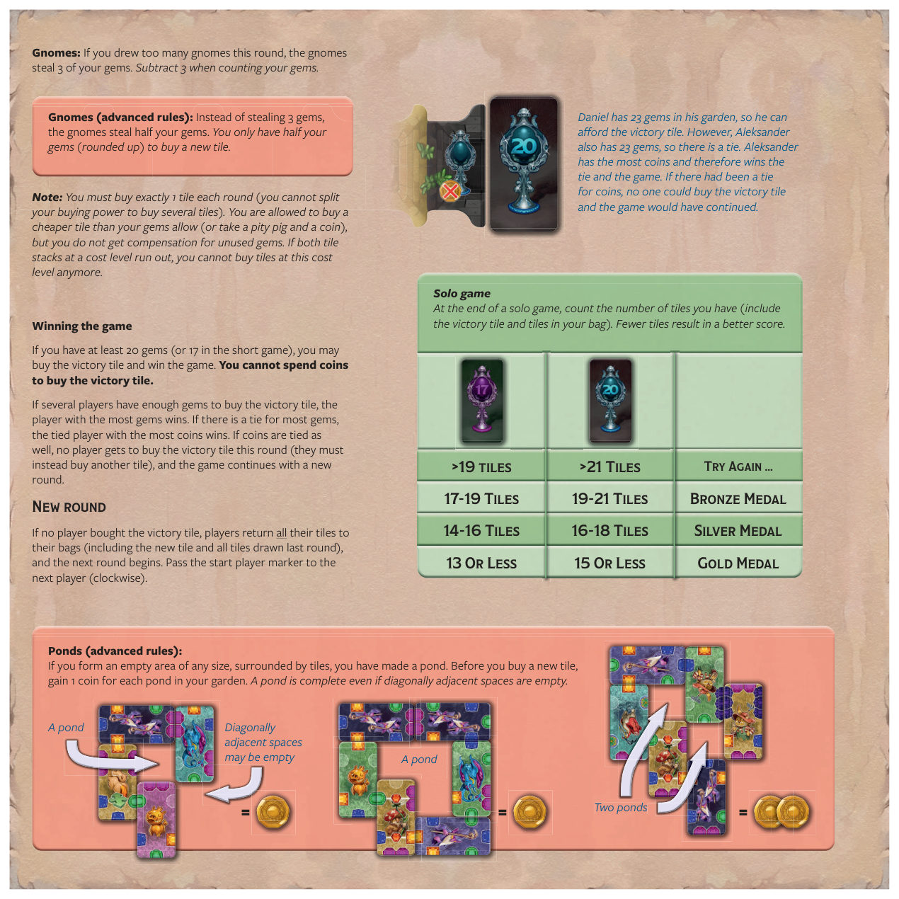
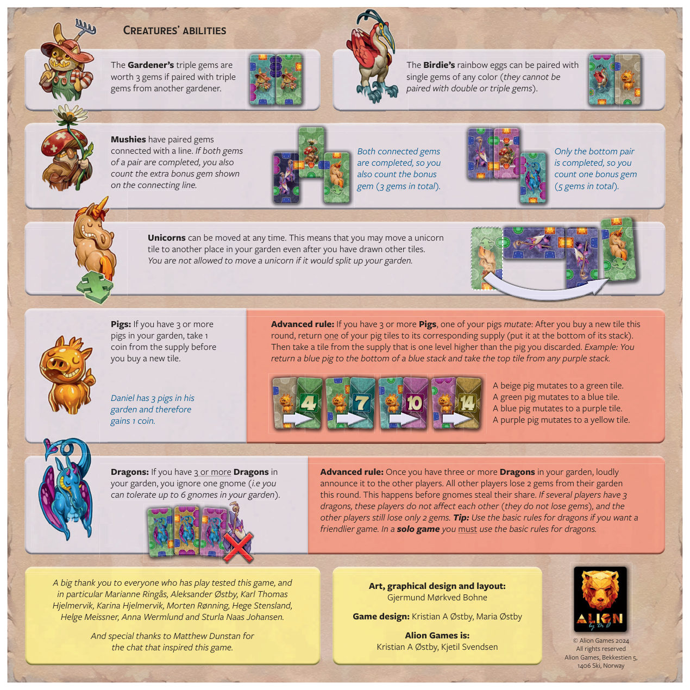

1游戏目标
每轮，所有玩家同时在自己面前建造花园：从自己的布袋里抽牌并放置。 你可以随时停止抽牌——因为若抽到太多地精（gnome），它们会偷走你的一些宝石（gem）。 回合结束时，用花园中已配对的宝石去买一张新牌；随后所有玩家把牌收回布袋，进行下一轮。 第一个凑够宝石、买下胜利牌的玩家获胜。

2组件
生物牌（creature tiles），含各类花园生物与宝石。
胜利牌（victory tile），买下即获胜。
游戏板（game board），放置牌堆与胜利牌。
硬币（coins），用于提升购买力。
布袋（cloth bags），每位玩家一个。
起始玩家标记 / 玩家辅助卡（start player marker / Player aid）。
地精牌（gnome tiles），分为单地精与双地精。
游戏中费用等级以宝石颜色区分，对应不同牌堆：
3准备
- 将游戏板放在桌子中央。
- 将硬币叠成一摞，放在游戏板左侧。
- 把生物牌按背面分拣成若干堆（按背面图案区分），每堆洗牌。将怜悯猪（pity pig，米色背景）正面朝下放在游戏板左侧；其他牌堆正面朝上环绕游戏板摆放（如第 1 页右图）。
- 取 6 枚硬币，在蓝、紫、黄三堆旁各放一枚。
- 将黑色胜利牌放在游戏板右侧，数字 “20” 朝上。
- 将绿、蓝、紫、橙四色牌各分成大致相等的两堆，一上一下放在游戏板两侧。
- 每位玩家开局在布袋中有 4 张单地精牌、2 张双地精牌、2 只怜悯猪（全部随机）。未使用的地精牌放回游戏盒。
- 将起始玩家标记交给最年轻的玩家，绿色面朝上。
进阶规则提示：原书中红框内的规则为进阶规则，第一局可忽略。若要使用进阶规则，把起始玩家标记红色面朝上；也可只选用部分进阶规则。
更多人游玩：合并两盒游戏可支持最多 8 人，加入更多盒可支持 12、16、20 人……
4建造花园
所有玩家同时从自己的布袋抽牌，在自己面前建造花园。当所有玩家都停止抽牌时，本轮结束。
从布袋逐张抽牌并放置，拼出你的花园。每张新牌必须遵循以下规则：
- 所有牌（第一张除外）必须至少与一张已放置的牌相邻。
- 所有相邻牌相接的边缘必须匹配：宝石边接宝石边，空白边接空白边。牌的背景颜色无关紧要。
你可以随时停止从布袋抽牌。若抽得太多，可能会抽到过多地精！牌可随意旋转。
所有相邻牌相接的边缘都必须匹配，包括空白边缘。下图给出非法放置示例。
示例：Maria 抽到一张使地精数量超过 5 的牌，必须停止抽牌（且不能放置最后抽到的那张牌）。 罕见情况：若抽到一张无法放置的牌，必须停止抽牌（忽略最后抽到的这张牌）。

5购买新牌
当所有玩家都停止抽牌（自愿，或因抽到太多地精），每位玩家必须购买一张新牌。 持有起始玩家标记的玩家先买，其余玩家按顺时针顺序跟随。
清点你花园中已完成的宝石数量，可购买费用不超过该数量的牌（从对应费用等级的牌堆顶端取一张）。
怜悯猪：若宝石少于 4 颗、买不起任何牌，必须改拿 1 只怜悯猪和 1 枚硬币。
6胜利与新轮
胜利条件
若你至少有 20 颗宝石（短局为 17），即可买下胜利牌获胜。不能用硬币买胜利牌。
若多名玩家都凑够买胜利牌的宝石：宝石最多者胜；宝石并列则硬币最多者胜；硬币也并列，则本轮无人能买胜利牌（须改买其他牌），游戏进入新一轮。
新一轮
若无人买下胜利牌，所有玩家把牌全部收回布袋（含新买的牌和上一轮抽的所有牌），开始下一轮；并将起始玩家标记顺时针传给下一位玩家。

7进阶规则
8生物能力
园丁的三连宝石若与另一名园丁的三连宝石配对，价值 3 颗宝石。
蘑菇有由一条线连接的成对宝石。若一对中的两颗宝石都完成，你还计入连线上显示的额外奖励宝石。 两对都完成 → 计 3 颗宝石；仅底对完成 → 计 1 颗奖励宝石（共 5 颗）。
若花园中有 3 只或更多龙，可忽略 1 个地精（即最多容 6 个地精）。
独角兽可随时移动——即使抽了其他牌之后，也可把它移到花园中另一处。若移动会拆散花园，则不允许移动。
若花园中有 3 只或更多猪，购买新牌前从供应区取 1 枚硬币。
小鸟的彩虹蛋可与任意颜色的单颗宝石配对（不能与双连或三连宝石配对）。

9单人模式
单人游戏结束时，清点你拥有的牌数（含胜利牌和布袋中的牌）。牌越少，得分越高。
| 奖章 | 标准局（牌数） | 短局（牌数） |
|---|---|---|
| 🥇 金质奖章 Gold | ≤ 13 | ≤ 15 |
| 🥈 银质奖章 Silver | 14–16 | 16–18 |
| 🥉 铜质奖章 Bronze | 17–19 | 19–21 |
| 🔁 再试一次 Try Again | > 19 | > 21 |
制作人员
游戏设计：Kristian A Østby、Maria Østby
美术、平面设计与排版：Gjermund Mørkved Bohne
Alion Games：Kristian A Østby、Kjetil Svendsen
版权：© Alion Games 2024，保留所有权利
地址：Alion Games, Bekkestien 5, 1406 Ski, Norway
鸣谢：感谢所有试玩者，特别是 Marianne Ringås、Aleksander Østby、Karl Thomas Hjelmervik、Karina Hjelmervik、Morten Rønning、Hege Stensland、Helge Meissner、Anna Wermlund、Sturla Naas Johansen；并特别感谢 Matthew Dunstan 激发本游戏的灵感对话。